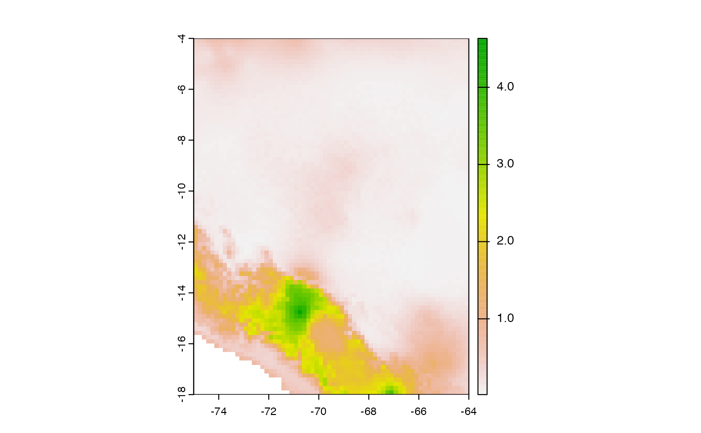

R/exdet_multvar.R
exdet_multvar.Rdexdet_multvar calculates NT2 metric.
exdet_multvar(M_calibra, G_transfer, G_mold = NULL)A SpatRaster or a Matrix of variables representing the
calibration area (M area in ENM context). If M_stack is matrix it should
contain the values of environmental variables as get it from
values function.
A SpatRaster or a Matrix of variables representing areas
or scenarios to which models will be transferred. If G_stack is matrix it
should contain the values of environmental variables as get it from
values function.
A SpatRaster representing the extent of the projection area. This is only necessary when G_stack is of class matrix; G_mold will we use as a mold to save the NT1 values computed by exdet_univa function.
NT2 metric (multivariate extrapolation) as a SpatRaster object.
The exdet univariate (exdet_univar) and
multivariate (exdet_multvar) is calculated following:
Mesgaran, M.B., Cousens, R.D. & Webber, B.L. (2014) Here be dragons:
a tool for quantifying novelty due to covariate range and correlation
change when projecting species distribution models.
Diversity & Distributions, 20: 1147–1159, DOI: 10.1111/ddi.12209.
m_calibra <- terra::rast(list.files(system.file("extdata/M_layers",
package = "smop"),
pattern = ".tif$",
full.names = TRUE))
g_transfer <- terra::rast(list.files(system.file("extdata/G_layers",
package = "smop"),
pattern = ".tif$",
full.names = TRUE))
NT2 <- smop::exdet_multvar(M_calibra = m_calibra,
G_transfer = g_transfer)
terra::plot(NT2)
